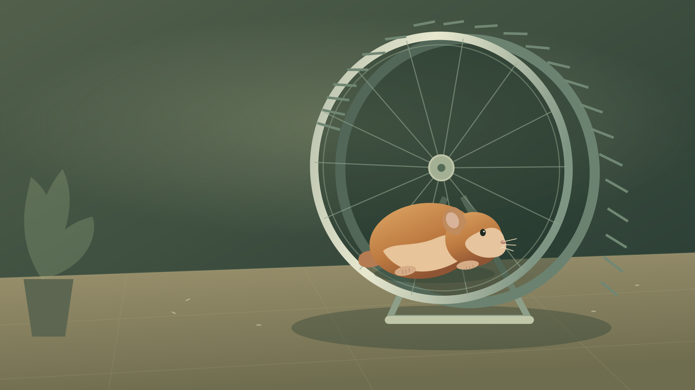

Overlay control room.
Live Squeekchain widgets for OBS and vMix.
Live scene preview
Public Squeekchain feed
Composition previewSqueekchain
Live ticker
Browser sourceAdd a Browser source in OBS, paste this URL and set the dimensions above.
Behind the wheel
Measurements and checks from this browser session.
Wheel observationWaiting for dataPolling every 5 seconds
PlausibilitySTALE · no sampleYour log starts with the first poll.
Settled chain work–Waiting for core endpoint
Mining funded blocks–Waiting for economy endpoint
View endpoint health, attestation and module details
Checks measure consistency, not proof of physical activity. Signer details are API claims; this toolkit does not verify signatures.